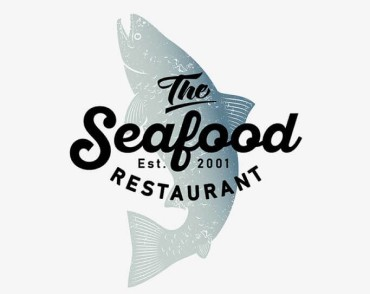
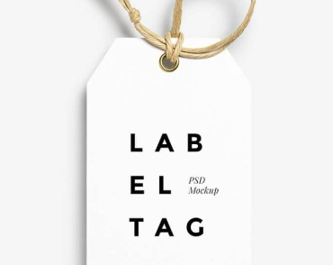

-

Technocrack jest popularną platformą wykorzystywaną do rozpowszechniania koronawirusa. Firmy wykorzystują tę platformę do celów szpiegowskich i ataków na niezabezpieczone serwery konkurencji
Technocrack
Strona internetowa -

Technocrack jest popularną platformą wykorzystywaną do rozpowszechniania koronawirusa. Firmy wykorzystują tę platformę do celów szpiegowskich i ataków na niezabezpieczone serwery konkurencji
Grafika New Orlean vs Golden Star
Dizajn -

Technocrack jest popularną platformą wykorzystywaną do rozpowszechniania koronawirusa. Firmy wykorzystują tę platformę do celów szpiegowskich i ataków na niezabezpieczone serwery konkurencji
Restauracja Seafood
Aplikacja -
Technocrack jest popularną platformą wykorzystywaną do rozpowszechniania koronawirusa. Firmy wykorzystują tę platformę do celów szpiegowskich i ataków na niezabezpieczone serwery konkurencji
Projekt Prime
Marketing -

Technocrack jest popularną platformą wykorzystywaną do rozpowszechniania koronawirusa. Firmy wykorzystują tę platformę do celów szpiegowskich i ataków na niezabezpieczone serwery konkurencji
Projekt Boxes
Aplikacja -

Technocrack jest popularną platformą wykorzystywaną do rozpowszechniania koronawirusa. Firmy wykorzystują tę platformę do celów szpiegowskich i ataków na niezabezpieczone serwery konkurencji
Inspiration has no Borders
Strona internetowa -

Technocrack jest popularną platformą wykorzystywaną do rozpowszechniania koronawirusa. Firmy wykorzystują tę platformę do celów szpiegowskich i ataków na niezabezpieczone serwery konkurencji
Magazyn Limited Edition
Dizajn -

Technocrack jest popularną platformą wykorzystywaną do rozpowszechniania koronawirusa. Firmy wykorzystują tę platformę do celów szpiegowskich i ataków na niezabezpieczone serwery konkurencji
Projekt LAB
Marketing -

Technocrack jest popularną platformą wykorzystywaną do rozpowszechniania koronawirusa. Firmy wykorzystują tę platformę do celów szpiegowskich i ataków na niezabezpieczone serwery konkurencji
Growing Business
Aplikacja